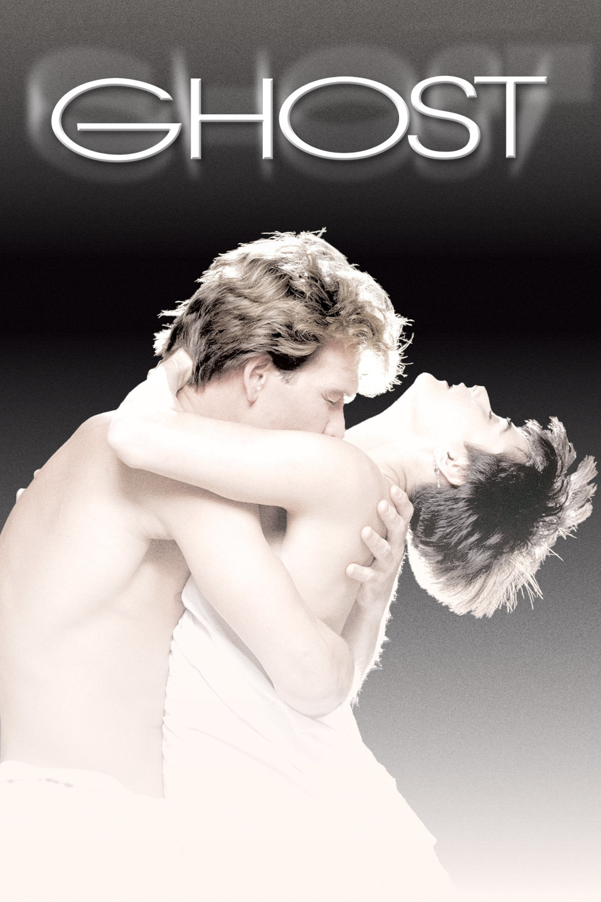

Мировая премьера: 13 июля 1990
Слоган: Когда любовь настолько сильна, ничто не может её оборвать... Даже убийство.
Сюжет: Сэм погибает в схватке с грабителем, но его призрак остаётся в мире живых. Отчаянно пытаясь связаться со своей возлюбленной Молли, он узнаёт, что его смерть не была случайной. Чтобы узнать правду о своём убийстве и спасти Молли от той же участи, он прибегает к помощи медиума, которая и сама не верит в свои способности.
Режиссёр: Джерри Цукер
В ролях: Патрик Суэйзи, Деми Мур, Вупи Голдберг
| Патрик Суэйзи | Сэм Вит |
| Деми Мур | Молли Дженсен |
| Вупи Голдберг | Ода Мэй Браун |
| Тони Голдуин | Карл Брунер |
| Винсент Скьявелли | Призрак в метро |
| Рик Авилес | Вилли Лопес |
| Брюс Чаркоу | Лайл Фергюсон |
Бюджет: $ 22 млн.
Кассовые сборы в США: $ 218 млн.
Кассовые сборы в мире: $ 506 млн.
Продолжительность: 2 ч. 2 мин.
Рейтинг: 7.1